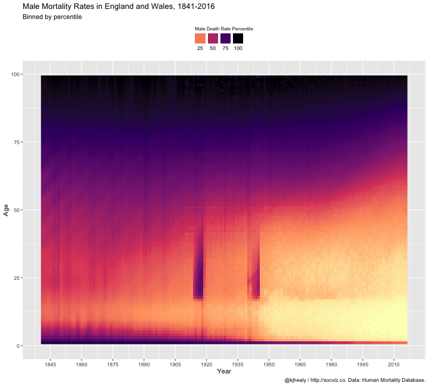

Some demographic data, for teaching purposes. Please do not distribute this package. For the original mortality data, consult http://mortality.org and follow the instructions there.
Installation
demog is a data package.
Install direct from GitHub
You can install the beta version of demog from GitHub with:
Installation using drat
While using install_github() works just fine, it would be nicer to be able to just type install.packages("demog") or update.packages("demog") in the ordinary way. We can do this using Dirk Eddelbuettel’s drat package. Drat provides a convenient way to make R aware of package repositories other than CRAN.
First, install drat:
Then use drat to tell R about the repository where demog is hosted:
You can now install demog:
To ensure that the demog repository is always available, you can add the following line to your .Rprofile or .Rprofile.site file:
With that in place you’ll be able to do install.packages("demog") or update.packages("demog") and have everything work as you’d expect.
Note that the drat repository only contains data packages that are not on CRAN, so you will never be in danger of grabbing the wrong version of any other package.
Loading the data
The package works best with the tidyverse libraries.
Load the data:
okboomer
#> # A tibble: 1,644 x 12
#> year month n_days births total_pop births_pct births_pct_day date
#> <dbl> <dbl> <dbl> <dbl> <dbl> <dbl> <dbl> <date>
#> 1 1938 1 31 51820 41215000 0.00126 40.6 1938-01-01
#> 2 1938 2 28 47421 41215000 0.00115 41.1 1938-02-01
#> 3 1938 3 31 54887 41215000 0.00133 43.0 1938-03-01
#> 4 1938 4 30 54623 41215000 0.00133 44.2 1938-04-01
#> 5 1938 5 31 56853 41215000 0.00138 44.5 1938-05-01
#> 6 1938 6 30 53145 41215000 0.00129 43.0 1938-06-01
#> 7 1938 7 31 53214 41215000 0.00129 41.6 1938-07-01
#> 8 1938 8 31 50444 41215000 0.00122 39.5 1938-08-01
#> 9 1938 9 30 50545 41215000 0.00123 40.9 1938-09-01
#> 10 1938 10 31 50079 41215000 0.00122 39.2 1938-10-01
#> # … with 1,634 more rows, and 4 more variables: seasonal <dbl>,
#> # trend <dbl>, remainder <dbl>, country <chr>britain
#> # A tibble: 19,536 x 5
#> year age female male total
#> <dbl> <int> <dbl> <dbl> <dbl>
#> 1 1841 0 0.136 0.169 0.153
#> 2 1841 1 0.0596 0.0632 0.0614
#> 3 1841 2 0.0364 0.0370 0.0367
#> 4 1841 3 0.0249 0.0261 0.0255
#> 5 1841 4 0.0185 0.0191 0.0188
#> 6 1841 5 0.0140 0.0143 0.0141
#> 7 1841 6 0.0109 0.0112 0.0110
#> 8 1841 7 0.00859 0.00898 0.00879
#> 9 1841 8 0.00686 0.00725 0.00705
#> 10 1841 9 0.00577 0.00605 0.00591
#> # … with 19,526 more rowsExample
library(dplyr)
library(ggplot2)
britain %>%
filter(age < 101) %>%
ggplot(aes(x = year, y = age, fill = ntile(male, 100))) +
geom_raster() +
scale_fill_viridis_c(option = "A", direction = -1) +
scale_x_continuous(breaks = seq(1845, 2015, by = 15)) +
ylim(c(0, 100)) +
guides(fill = guide_legend(nrow = 1, title.position = "top", label.position = "bottom")) +
labs(x = "Year", y = "Age", fill = "Male Death Rate Percentile",
title = "Male Mortality Rates in England and Wales, 1841-2016",
subtitle = "Binned by percentile",
caption = "@kjhealy / http://socviz.co. Data: Human Mortality Database.") +
theme_minimal() +
theme(legend.position = "top",
legend.title = element_text(size = 8)) 